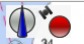
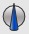

Display Orientation

Chart Orientation and GPS Status Icon
- There are three main options for display orientation: North Up (for planning), Course Up
 (for navigating with a GPS) and Chart UP (for skewed charts). With Course Up OpenCPN uses COG (Course Over Ground). A head Up mode, is not available. The easiest way to change between these two modes is through the “Right Click” menu. One situation where course up might be considered is when navigating a river or a canal. The third orientation is when skewed charts are displayed, they are simply shown as “Chart Up”, but an optional setting exists to show them as “North Up”.
(for navigating with a GPS) and Chart UP (for skewed charts). With Course Up OpenCPN uses COG (Course Over Ground). A head Up mode, is not available. The easiest way to change between these two modes is through the “Right Click” menu. One situation where course up might be considered is when navigating a river or a canal. The third orientation is when skewed charts are displayed, they are simply shown as “Chart Up”, but an optional setting exists to show them as “North Up”. - In the picture below the Course Up is active. COG is 41Deg. Notice how all text on the vector chart, is aligned correctly. This only works in OpenGL mode. The red arrow, in the upper right corner, is always pointing North.

- If the option “Show skewed raster charts as North-up” in the Options→Display→Advanced tab, is not ticked, the right-click toggle option “Course Up Mode/North Up Mode” will be replaced by “Course Up Mode /Chart Up Mode”, for skewed charts.
- If an electronic compass is available in the NMEA stream the own ship icon will be orientated according to this heading. The difference can be seen on the chart if there is a cross current, for example. The boat below is heading WNW but is being set SW. An AIS CPA, Closest Point of Approach is also visible.

- This icon (blue color) to the far right in the ToolBar indicates that the display is in North Up mode. It may also indicate Chart Up mode for skewed charts, if chart up mode instead of North up mode i selected. See above
- The red version of the icon indicates Course Up mode. Clicking the icon toggles North Up / Course up. These settings can also be toggled in the rightclick menu, as well as in Options → Display →General Tab. In the Options-Display→Advanved Tab, the update period for course up, can be set. This comes in handy, for example, to prevent the display jerking around in a chop.
- The Course Up/North Up icon share a small dialog with the GPS indicator. This dialog can be toggled on/of with the “Ctrl + i” shortcut.
- Note that both the red and the blue arrows are always pointing North.
- Look Ahead! To see more of the chart in front of the boat, activate Options → Display → Look Ahead Mode. Your own boat will no longer be in the center of the screen. Instead it will be located away from the center, in the opposite direction to your present gps course(COG).
- Don't always Look Ahead! If you are at anchor, swinging on the hook produces random courses and low speeds.If Look Ahead is on in this situation the chart rendering will constantly be redrawn, with the boat in all possible lookahead positions as the course changes. To prevent this kind of scenario OpenCPN works like this:
- If the boat speed is less than 1 kt, then lookahead is disabled.
- If boat speed is greater than 3 kts, lookahead is enabled.
- In between 1 and 3 kts, the lookahead “distance” is adjusted smoothly.
- If the problems still there when doing more than 3 kts, consider using “Options→Connections → FilterNMEA Course and Speed data” to average out the “jumpiness”.
- Show skewed raster charts as North-up. Skewed charts are normally showed “chart up”, as intended by design. If ticking this box, these charts are shown North-Up. In both cases, activating course up, works as expected, the difference is when course up is not on.
- Full Screen. Enter Full Screen Mode with the F11 toggle. Toggling full scree is also possible through the Menu Bar → View. Once in full screen mode the Right-Click-menu contains the item “Toggle Full Screen”.